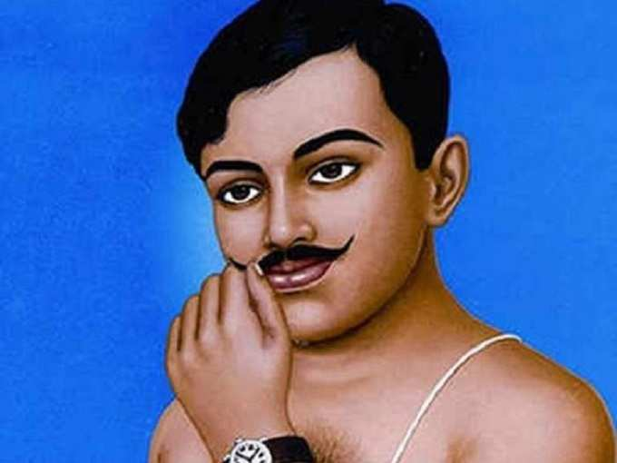

Chandra shekhar Azad

Chandrashekhar Sitaram Tiwari (23 July 1906 – 27 February 1931), popularly
known as Chandra Shekhar Azad, was an Indian revolutionary who reorganised the Hindustan
Republican Association (HRA) under its new name of Hindustan Socialist Republican Association
(HSRA) after the death of its founder,
Ram Prasad Bismil, and three other prominent party leaders, Roshan Singh,
Rajendra Nath Lahiri and Ashfaqulla Khan.
About the Legend
- Chandrashekhar Azad was born on 23 July 1906 in Bhabhra
village as Chandra Shekhar Tiwari,
in a Brahmin family, in the princely-state of Alirajpur.
- His forefathers were from Badarka village of Unnao
district of Uttar Pradesh.
- His mother wanted her son to be a great Sanskrit scholar and persuaded his father
to send him to Kashi Vidyapeeth, Banaras, to study.
- In 1921, when the Non-Cooperation Movement was at its height, Chandra Shekhar,
then a 15-year-old student,
joined. As a result, he was arrested on 20 December.
- On being presented before the Parsi district magistrate Justice
M. P. Khareghat a week later, he gave his name as "Azad" (The Free),
his father's name as "Swatantrata" (Independence) and his residence as "Jail".
- After the suspension of the non-cooperation movement in 1922 by Mahatma Gandhi,
Azad became disappointed. He met a young revolutionary, Manmath Nath Gupta, who introduced him
to Ram Prasad Bismil who had formed the Hindustan
Republican Association (HRA), a revolutionary organization.
- He then became an active member of the HRA and started to collect funds for HRA. Most of the
fund collection was through robberies of government property.
- He was involved in the Kakori Train Robbery of 1925, the shooting of John P. Saunders
at Lahore in 1928 to avenge the killing of Lala Lajpat Rai, and at last,
in the attempt to blow up the Viceroy of India's train in 1929.
- Despite being a member of Congress, Motilal Nehru regularly
gave money in support of Azad.
- Azad made Jhansi his organization's hub for some time. He used the forest of Orchha, situated 15 kilometres (9.3 mi) from Jhansi, as a site for shooting practice and,
being an expert marksman, he trained other members of his group.
He built a hut near to a Hanuman temple on the banks of the Satar River and lived there under the alias of Pandit Harishankar Bramhachari for a long period.
He taught children from the nearby village of
Dhimarpura and thus managed to establish a good rapport with the local residents.
- While living in Jhansi, he also learned to drive a car at the Bundelkhand Motor Garage in Sadar Bazar. Sadashivrao Malkapurkar, Vishwanath Vaishampayan and Bhagwan Das Mahaur came in close
contact with him and became an integral part of his revolutionary group.
- The then congress leaders, Raghunath Vinayak Dhulekar and Sitaram Bhaskar Bhagwat were also close to Azad. He also stayed for some time in the house of Rudra Narayan Singh at Nai Basti,
as well as Bhagwat's house in Nagra.
- One of his main supporters was Bundelkhand Kesri Dewan Shatrughan Singh, the founder of the freedom movement in Bundelkhand, he gave Azad financial as well as assistance with weapons and fighters.
Azad visited his fort multiple times in Mangrauth.
- The Hindustan Republican Association (HRA) was formed by Ram Prasad Bismil, Jogesh Chandra Chatterjee, Sachindra Nath Sanyal and Shachindra Nath Bakshi in 1923. In the aftermath of the Kakori train robbery in 1925,
the British suppressed revolutionary activities.
- In 1928, along with Bhagat Singh and other revolutionaries he secretly reorganised the Hindustan Republican Association (HRA), renaming it as the Hindustan Socialist Republican Association (HSRA) on 8—9 September,[8] so as to achieve their primary aim of an
independent India based on socialist principle.
- On 27 February 1931, the CID head of the police at Allahabad, Sir J. R. H. Nott-Bower was tipped off by someone that Azad was at Alfred Park and was having a talk with his companion Sukhdev Raj. On receiving it, Bower called on the Allahabad Police to accompany him to the park to arrest him. Azad's old comrades Veerbhadra Tiwari and Yashpal were also held
responsible for tipping off two of the police constables.
- Several schools, colleges, roads, and other public institutions across India are also named after Azad.
For more information, check out Chandra shekhar Azad on Wikipedia. [ Developed by @ Kartik Paroha. ]